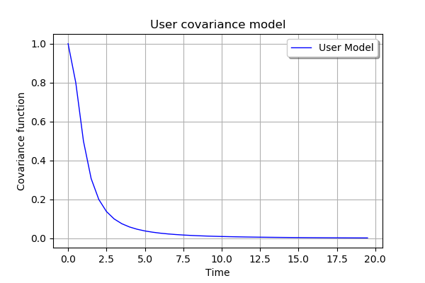

Create a custom stationary covariance model¶
This use case illustrates how the user can define his own stationary covariance model thanks to the object UserDefinedStationaryCovarianceModel defined from:
a mesh
 of dimension
of dimension  defined by the vertices and the associated simplices,
defined by the vertices and the associated simplices,a collection of covariance matrices stored in the object CovarianceMatrixCollection noted where for
Then we build a stationary covariance function which is a piecewise constant function on  defined by:
defined by:
where  is such that is the vertex of the nearest to
is such that is the vertex of the nearest to
[1]:
from __future__ import print_function
import openturns as ot
[2]:
# We detail the example described in the documentation
# Create the time grid
t0 = 0.0
dt = 0.5
N = int((20.0 - t0) / dt)
mesh = ot.RegularGrid(t0, dt, N)
# Create the covariance function
def gamma(tau):
return 1.0 / (1.0 + tau * tau)
# Create the collection of HermitianMatrix
coll = ot.CovarianceMatrixCollection()
for k in range(N):
t = mesh.getValue(k)
matrix = ot.CovarianceMatrix([[gamma(t)]])
coll.add(matrix)
[6]:
# Create the covariance model
covmodel = ot.UserDefinedStationaryCovarianceModel(mesh, coll)
# One vertex of the mesh
tau = 1.5
# Get the covariance function computed at the vertex tau
covmodel(tau)
[6]:
[[ 0.307692 ]]
[7]:
# Graph of the spectral function
x = ot.Sample(N, 2)
for k in range(N):
t = mesh.getValue(k)
x[k, 0] = t
value = covmodel(t)
x[k, 1] = value[0, 0]
# Create the curve of the spectral function
curve = ot.Curve(x, 'User Model')
# Create the graph
myGraph = ot.Graph('User covariance model', 'Time', 'Covariance function', True)
myGraph.add(curve)
myGraph.setLegendPosition('topright')
myGraph
[7]:
